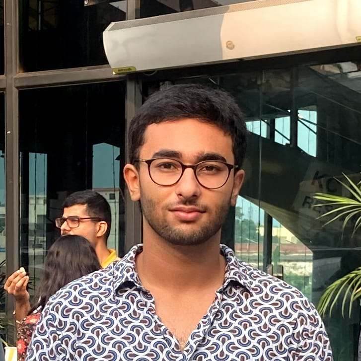

For FrontEnd Project!
Theme: Hy_Cntrst_2000s

Hey there!
This was probably THE hardest part of creating this website. Writing an about section for myself. LOL
Anyways, I am Karan Verma and I am a budding software developer from Jammu, India. Currently in Delhi to pursue my bachelors in Computer Science.
I have always been a tech enthusiast and I love to code. This website was a great learning oppurtunity for me as I learnt how to deploy a website on a domain.